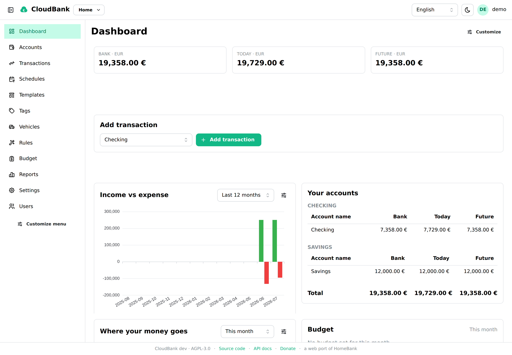
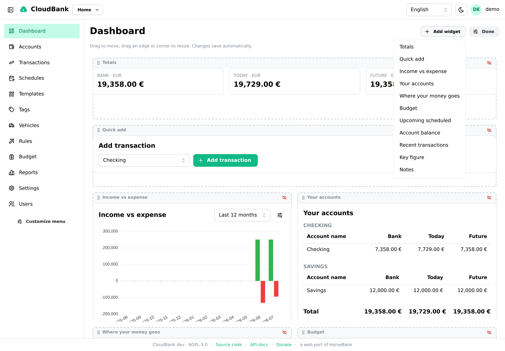
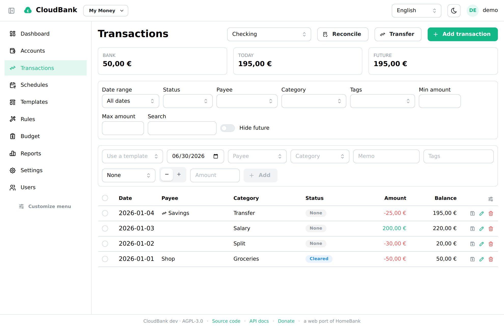
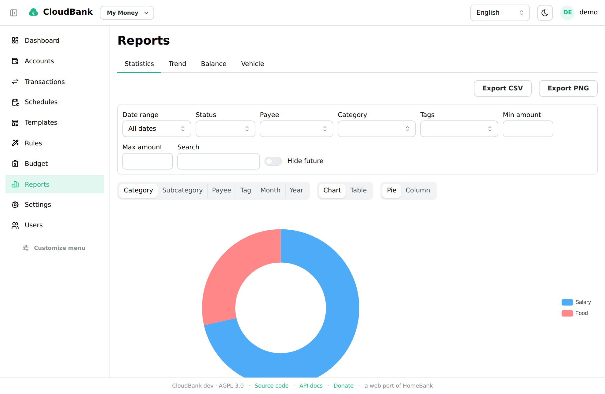

Projects › CloudBank
CloudBank
Your money, self-hosted. A free, open-source personal finance manager — a from-scratch web port of HomeBank, built for the browser and the cloud.
What it is
CloudBank brings the HomeBank workflow — accounts, a powerful transaction register, scheduled transactions, budgets and rich reports — to a web UI you can reach from any device, while your data stays in a SQLite database on a server you control. It ships as a single Docker container, with no external database to run.
It’s an independent, clean-room reimplementation — it doesn’t copy or link any HomeBank source code, and it tracks parity with current and future HomeBank releases. Released under the AGPL-3.0 licence.

Features
Every account type
Bank, cash, checking, savings, credit card, liability, asset and investment accounts — each with its own currency, default payment mode, and both today’s and a projected future balance.
Transactions
12 payment types, the cleared/reconciled lifecycle, category splits, free tags, internal (and cross-currency) transfers, bulk edit and duplicate detection.
Powerful register
Running balance, rich filtering with a future-transactions toggle, per-user columns, a live selection total, a reconciliation workflow and double-click-to-edit.
Scheduled transactions
Automatic posting (optionally pre-registering up to three months ahead), per-period income/expense summaries, templates, and assignment rules for auto-categorization.
Budgets & reports
Budgets plus a full report suite — Statistics, Trend Time, Balance, Budget and Vehicle cost — with interactive charts and CSV/PNG export.
Import & export
Import HomeBank .xhb, QIF, OFX/QFX and CSV with an assistant; export
back to HomeBank .xhb, QIF and CSV.
Automatic bank sync
Pull new transactions straight from your bank — de-duplicated and run through your rules — via SimpleFIN (worldwide) or Enable Banking (EU/EEA + UK, PSD2). Your bank credentials never touch CloudBank.
Multi-currency & multi-user
Manual and online (ECB / frankfurter.app) exchange rates, admin-managed users, a responsive UI, and English & Italian.
Make it yours
CloudBank is built to fit how you work. The dashboard is a free-form grid: place and resize widgets anywhere, and add multiple instances of any widget — balances, quick-add, spending donut, budget gauge, upcoming, account balance, recent transactions, big-number key figures and free-text notes. Pick from light / dark / auto themes with an accent-colour picker that follows you across devices, a collapsible and reorderable sidebar, HomeBank-style smart amount entry, and a first-login tutorial you can restart any time.



Run it yourself
You need Docker with the Compose plugin. One container, no external database — your data lives in a volume you control:
services:
cloudbank:
image: ghcr.io/easly1989/cloudbank:main # latest stable release
container_name: cloudbank
restart: unless-stopped
ports:
- "8080:8080"
environment:
CB_SECURE_COOKIES: "false" # only for a plain-HTTP LAN install
volumes:
- cloudbank-data:/data
volumes:
cloudbank-data:
docker compose up -d # open http://localhost:8080 and complete the first-run admin setup
:main is the latest stable release, while
:latest is the bleeding-edge nightly. Pin deliberately. An interactive API
reference (Swagger UI) is served by the app at /api/docs.
Open & free — support it
CloudBank is an open-source labour of love, released under the AGPL-3.0. If it’s useful to you, a donation genuinely helps and is much appreciated. ♥